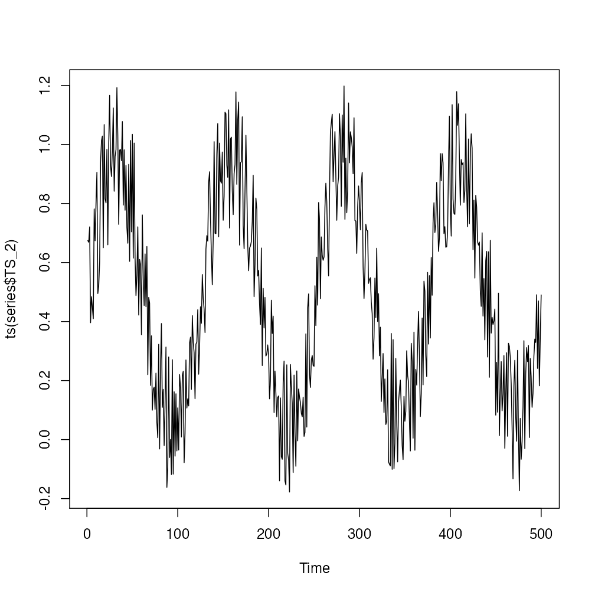
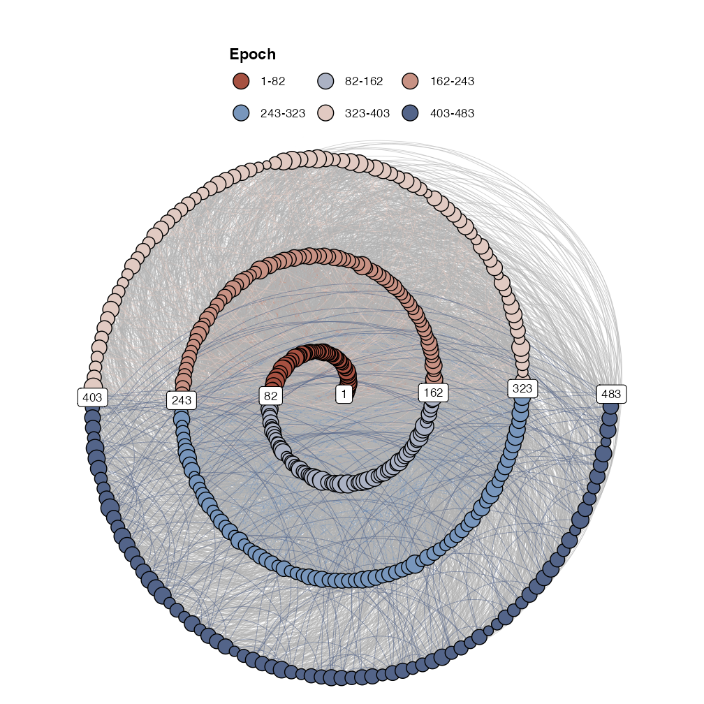

Recurrence Networks
A recurrence network is a representation of a recurrence matrix as a graph (a network). The nodes in the network represent time points, and if a value at any point in time will recur at some later point in time, an edge is drawn between the time points.
Recurrence Networks
Recurrence networks are graphs created from a recurrence matrix. This means the nodes of the graph represent time points and the connections between nodes represent a recurrence relation betwen the values observed at those time points. That is, often the matrix represents recurrences in a reconstructed state space, the values are coordinates and therefore we would say the edges of a recurrence network represent a temporal relation between recurring states. The ultimate reference for learning everything about recurrence networks is:
Package casnet has some functions to create recurrence networks, they are similar to the functions used for CRQA: * rn() is very similar to rp(), it will create a matrix based on embedding parameters. One difference is the option to create a weighted matrix. This is a matrix in which non-recurring values are set to 0, but the recurring values are not replaced by a 1, the distance value is retained and acts as an edge-weight * rn_plot() will produce the same as rp_plot()
We can turn the recurrence matrix into an adjecency matrix, an igraph object. This means we can use all the igraph functions to calculate network measures.
library(igraph) #library(qgraph) #library(survival) # Reload the data we used earlier series <- rio::import("https://github.com/complexity-methods/CSA-assignments/raw/master/assignment_data/BasicTSA_arma/series.xlsx") # Lets use a shorter dataset to speed things up series <- series[1:500,]
We’ll analyse the three time series as a recurrence network: * Compare the results, look at the SMall World Index and other measures - Remember: TS_1 was white noise, TS_2 was a sine with added noise, TS_3 was the logistic map in the chaotic regime. * Note that some of the RQA measures can be exactly calculated from the measures of the network representation. - Try to understand why the Recurrence is reprented as the *degree centrality() of the network (igraph::centr_degree())
TS 1

arcs=6 est_parameters(y = series$TS_1)

# By passing emRad = NA, a radius will be calculated RN1 <- casnet::rn(y1 = series$TS_1, emDim = 7, emLag = 2, emRad = NA, targetValue = .01) #> #> Auto-recurrence: Setting diagonal to (1 + max. distance) for analyses #> #> Searching for a radius that will yield 0.01 for RR casnet::rn_plot(RN1)

# Get RQA measures rqa1 <- rp_measures(RN1) # knitr::kable(rqa1,digits = 2) %>% # kable_styling() %>% # scroll_box(width = "100%", height = "100px") g1 <- igraph::graph_from_adjacency_matrix(RN1, mode="undirected", diag = FALSE) igraph::V(g1)$size <- igraph::degree(g1) g1r <- casnet::make_spiral_graph(g1,arcs = arcs, epochColours = getColours(arcs), markTimeBy = TRUE)

# Network measures igraph::average.path.length(g1) #> [1] 4.242546 igraph::transitivity(g1) #> [1] 0.3158716 # qgraph::smallworldness(g1) recs1 <- igraph::centr_degree(g1) (RP_N <- sum(recs1$res)) #> [1] 2368 rqa1$RP_N #> [1] 2368 RP_N / recs1$theoretical_max #> [1] 0.01000499 rqa1$RR #> [1] 0.01000499
TS 2

est_parameters(series$TS_2)

RN2 <- rn(y1 = series$TS_2, emDim = 7, emLag = 2, emRad = NA, targetValue = 0.01) #> #> Auto-recurrence: Setting diagonal to (1 + max. distance) for analyses #> #> Searching for a radius that will yield 0.01 for RR rn_plot(RN2)

# Get RQA measures rqa2 <- rp_measures(RN2) # knitr::kable(rqa2,digits = 2) %>% # kable_styling() %>% # scroll_box(width = "100%", height = "100px") g2 <- igraph::graph_from_adjacency_matrix(RN2, mode="undirected", diag = FALSE) V(g2)$size <- degree(g2) g2r <- casnet::make_spiral_graph(g2,arcs = arcs,epochColours = getColours(arcs), markTimeBy = TRUE)

# Network measures igraph::average.path.length(g2) #> [1] 9.696495 igraph::transitivity(g2) #> [1] 0.3422773 # igraph::smallworldness(g2) recs2 <- igraph::centr_degree(g2) (RP_N <- sum(recs2$res)) #> [1] 2368 rqa2$RP_N #> [1] 2368 RP_N / recs2$theoretical_max #> [1] 0.01000499 rqa2$RR #> [1] 0.01000499
TS 3

est_parameters(series$TS_3)

RN3 <- rn(y1 = series$TS_3, emDim = 7, emLag = 8, emRad = NA, targetValue = 0.01) #> #> Auto-recurrence: Setting diagonal to (1 + max. distance) for analyses #> #> Searching for a radius that will yield 0.01 for RR rn_plot(RN3)

# Get RQA measures rqa3 <- rp_measures(RN3) # knitr::kable(rqa3,digits = 2) %>% # kable_styling() %>% # scroll_box(width = "100%", height = "100px") g3 <- igraph::graph_from_adjacency_matrix(RN3, mode="undirected", diag = FALSE) V(g3)$size <- degree(g3) g3r <- make_spiral_graph(g3,arcs = arcs ,epochColours = getColours(arcs), markTimeBy = TRUE)

igraph::average.path.length(g3) #> [1] 6.094221 igraph::transitivity(g3) #> [1] 0.3300908 # igraph::smallworldness(g3) recs3 <- igraph::centr_degree(g3) (RP_N <- sum(recs3$res)) #> [1] 2030 rqa3$RP_N #> [1] 2030 RP_N / recs3$theoretical_max #> [1] 0.01000246 rqa3$RR #> [1] 0.01000246
Multiplex Recurrence Networks
Consider the three time series to be part of a multi-layer recurrence network. Common properties of the multiplex network are multi-layer mutual information and edge overlap.
# Inter-layer Mutual Information (interlayer_mi12 <- mi_interlayer(g1,g2)) #> [1] 2.20549 #> attr(,"miType") #> [1] "inter-layer mutual information" (interlayer_mi13 <- mi_interlayer(g1,g3)) #> [1] 1.666615 #> attr(,"miType") #> [1] "inter-layer mutual information" (interlayer_mi23 <- mi_interlayer(g2,g3)) #> [1] 2.155163 #> attr(,"miType") #> [1] "inter-layer mutual information" # mean I-L MI mean(c(interlayer_mi12,interlayer_mi13,interlayer_mi23)) #> [1] 2.009089 # Edge Overlap (edge_overlap12 <- length(E(g1 %s% g2)) / (length(E(g1))+length(E(g2)))) #> [1] 0.003800676 (edge_overlap13 <- length(E(g1 %s% g3)) / (length(E(g1))+length(E(g3)))) #> [1] 0.005457026 (edge_overlap23 <- length(E(g2 %s% g3)) / (length(E(g2))+length(E(g3)))) #> [1] 0.004092769 # mean EO mean(c(edge_overlap12,interlayer_mi13,interlayer_mi23)) #> [1] 1.275193 # Overall Edge Overlap (eo_all <- length(E(intersection(g1,g2,g3)))) #> [1] 0 #(eo_mean <- eo_all / (edge_overlap12+edge_overlap13+edge_overlap23))